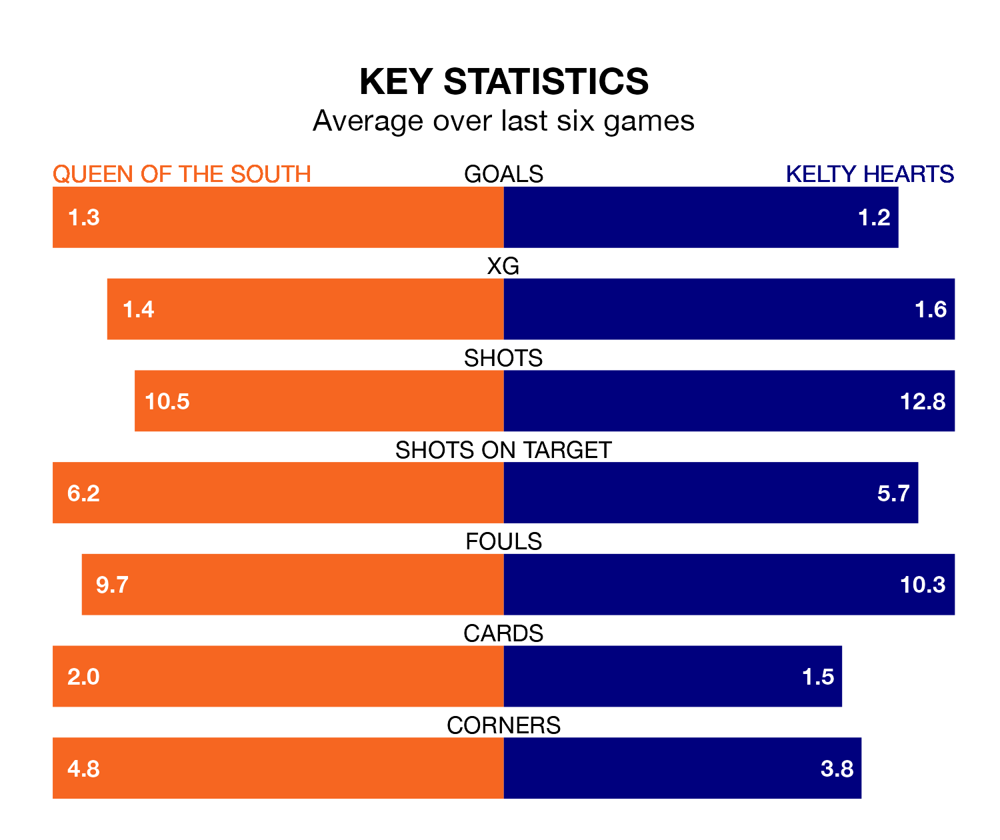

Queen of the South host Kelty Hearts on Saturday at Palmerston Park in League One.
In their last league match, on March 30, Queen of the South drew with Hamilton Academical 0-0 away.
Kelty Hearts won, 3-1 at home against Edinburgh City, with Alfie Bavidge (two) and Craig Johnston on the scoresheet.
In the last 10 years, Queen of the South and Kelty Hearts have played each other on eight occasions. Queen of the South won one of them, Kelty Hearts five, and they drew twice.
On average, the Doonhamers scored 0.9 goals and Kelty Hearts 1.6 in those matches.
Their last meeting was on February 10, when they played out a 0-0 draw.
Queen of the South are in disappointing form in League One, with one win and two draws from their last six games.
With two wins and four losses over that period, Kelty Hearts's form is slightly better – they have taken six points from 18, compared to the Doonhamers's five.
With 39 goals in 31 games so far this season, the home side are the league's third-lowest scorers with 1.3 goals per game. But they are conceding fewer than average too, letting in 48 goals at a rate of 1.5 per game.
The visitors are also below average scorers, with 1.4 goals per game, compared to a league average of 1.6. They have conceded 1.7 goals per game.
In Bavidge, Kelty Hearts have one of the league's most on-form strikers so far this season. He has notched nine goals in 20 appearances, to sit sixth in the scoring charts.
His goal rate of one every 193 minutes is quicker than that of Gavin Reilly, Queen of the South's top scorer with a goal every 231 minutes, and a total of eight goals in 25 games.
Queen of the South are seventh in the table after 31 games, of which they have won nine and drawn seven, earning 34 points.
Kelty Hearts are one place ahead of the Doonhamers in sixth, with 10 wins and seven draws putting them on 37 points.
Updated: 10:31 (UTC), 31/03/24